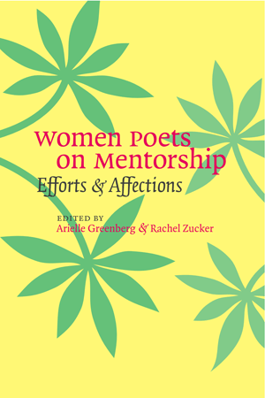

This Condensery: Poets On Mentorship
Curated by Jennifer Bartlett
In addition to HTML format, some of these articles can be downloaded as PDFs for printing. To view the PDF files, you need Adobe Acrobat Reader, which you can download for free HERE.
Introduction
Jennifer Bartlett
An Introduction: On Being Mentored by Books (HTML | PDF)
In Interview
All interviews conducted by Jennifer Bartlett
Arielle Greenberg and Rachel Zucker (HTML | PDF)
Joanna Fuhrman and Susanna Fry (HTML | PDF)
Essays & Poems
Jen Benka
For Muriel (HTML | PDF)Susanna Fry & Joanna Fuhrman
Voracious Weather (collaborative poem) (HTML | PDF)Poems by Renée Rossi & Shin Yu Pai:
Renée Rossi
Three Poems (HTML | PDF)Shin Yu Pai
Meat Stone (HTML | PDF)
Excerpts from Women Poets on Mentorship: Efforts & Affections
Edited by Arielle Greenberg and Rachel Zucker; forthcoming in May 2008.
All excerpts are reprinted with the permission of the University of Iowa Press.

Rachel Zucker and Arielle Greenberg
On My Poetry Mentors (HTML | PDF)Elizabeth Treadwell
On Working with Paula Gunn Allen (HTML | PDF)Katy Lederer
On Working with Lyn Hejinian (HTML | PDF)Kristen Prevallet
On Working with Anne Waldman (HTML | PDF)